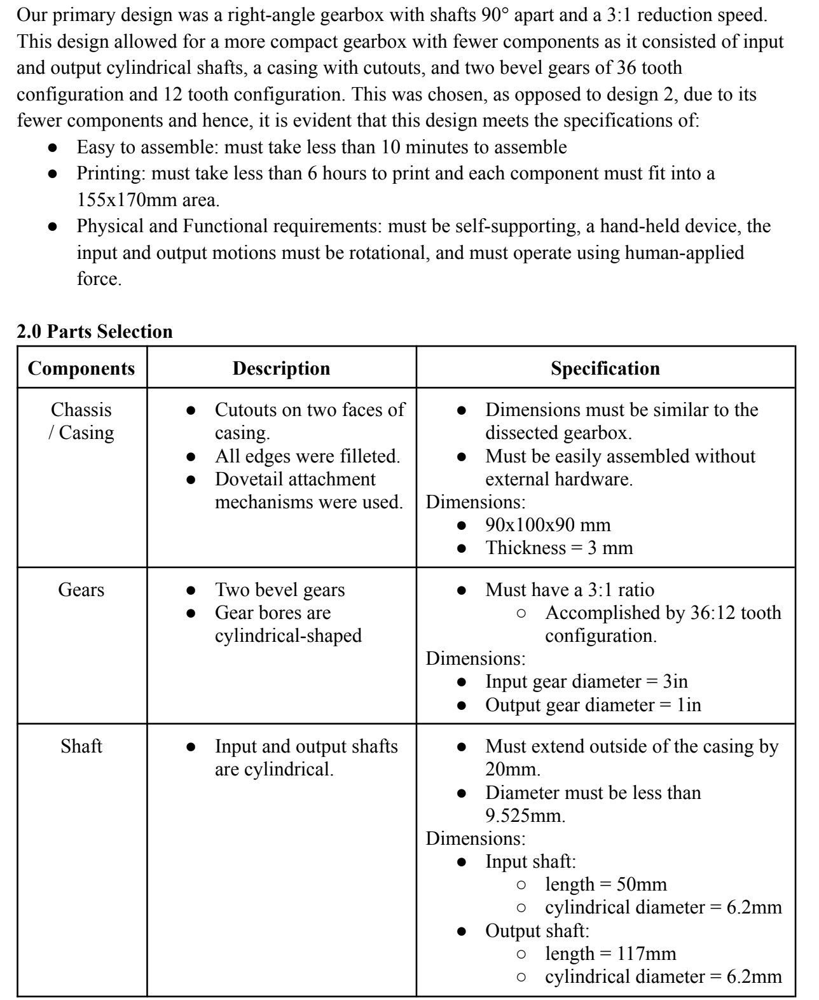
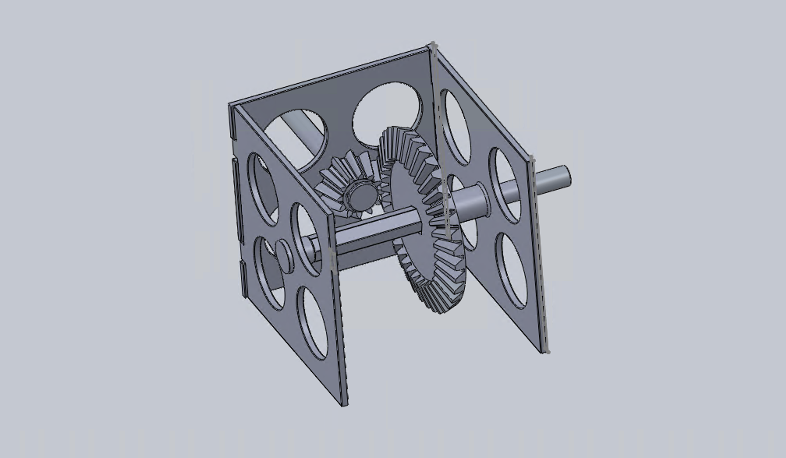
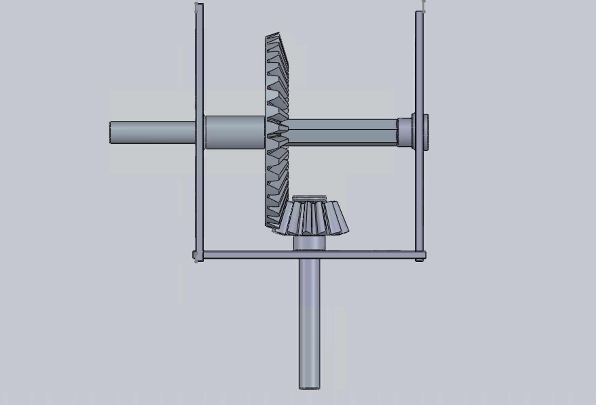
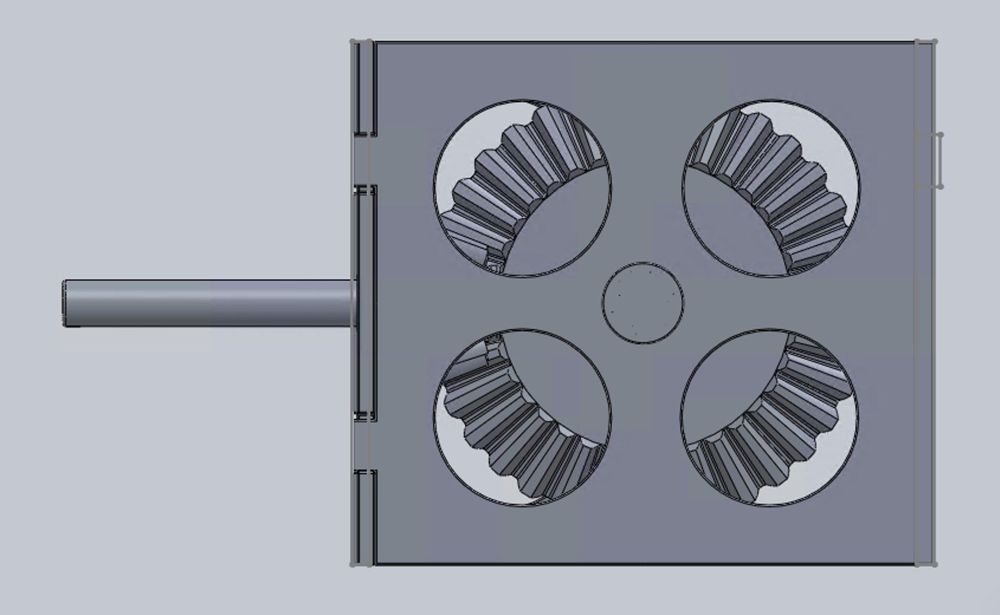
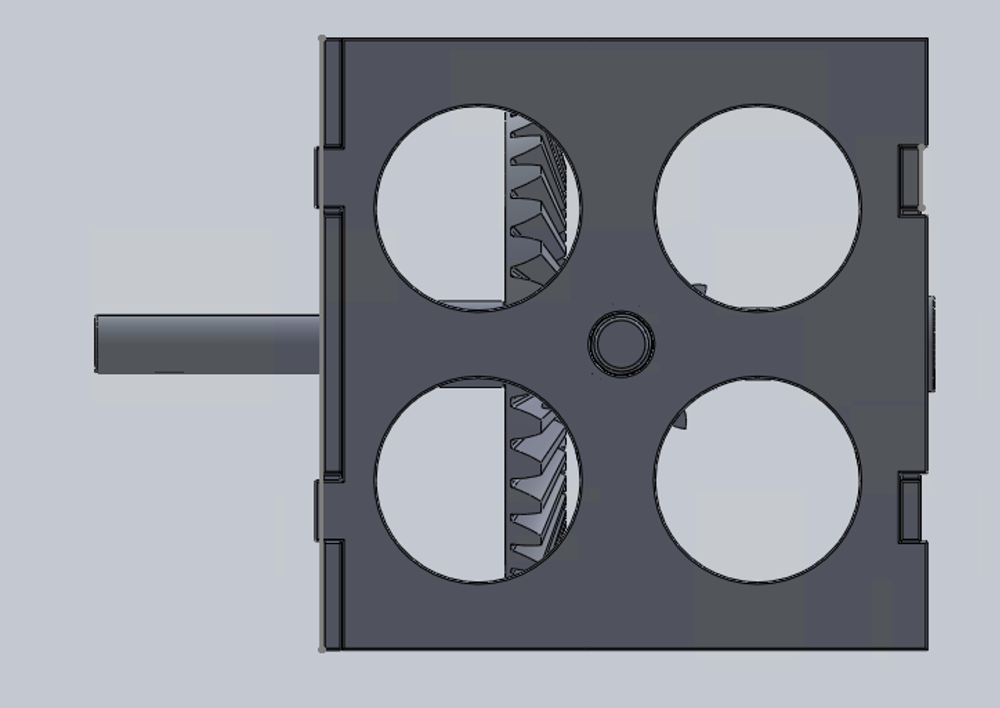

Overview
This project involved collaborating with a team of four to design and prototype a right-angle gearbox under specific engineering constraints. The objective was to create a functional gearbox that demonstrated reliable torque reduction and durability while adhering to rapid-prototyping requirements, including full 3D printing, a maximum six-hour print time, and the exclusion of external fasteners. The design had to remain compact, practical for assembly, and able to withstand performance testing.
Process
The project began by translating the design constraints into clear engineering specifications. These specifications included limitations on size, material compatibility with 3D printing, prohibitions on worm gears, and the requirement to avoid external fastening hardware. A target reduction ratio of at least 3:1 was also established to ensure meaningful torque transmission. A sample of the specifications can be seen below:

Using these specifications, the team iterated through multiple design concepts:
- First iteration: The initial gearbox design encountered tolerance challenges, such as shaft misfits and gear instability. Additionally, the input shaft’s rotation caused gears to drift outward, reducing reliability.
- Improved iteration: To address these issues, support structures were added behind the gears to restrict movement, a dovetail mechanism was introduced for assembly without fasteners, and a hexagonal shaft was incorporated to improve durability and alignment.




After finalizing the design, the gearbox was fabricated using FDM 3D printing. Performance testing involved attaching a hand drill to the input shaft to validate the speed reduction ratio and operational durability. The gearbox successfully achieved a ratio greater than 3:1 and sustained continuous operation for 30 seconds without failure.
My Contributions
- Prepared technical documentation detailing the design specifications, trade-offs, and iteration process.
- Designed and modeled key gearbox components in SolidWorks, ensuring compatibility between gears, shafts, and housings.
- Evaluated assembly methods and integrated mechanisms such as dovetail joints and hexagonal shafts for stability and reliability.
- Collaborated with teammates to troubleshoot tolerance and fit issues, coordinating design changes to align with printing and testing constraints.
Outcomes
- Strengthened proficiency in SolidWorks, supporting progress toward the Certified SolidWorks Associate (CSWA) certification and the Certified SolidWorks Professional (CSWP) certification.
- Gained practical experience in gearbox design, torque reduction, and attachment mechanisms for 3D-printed systems.
- Developed ability to translate engineering constraints into specifications and balance them against usability, cost, and manufacturability.
- Enhanced teamwork, iteration, and problem-solving skills by navigating the challenges of tolerance, assembly, and prototyping.